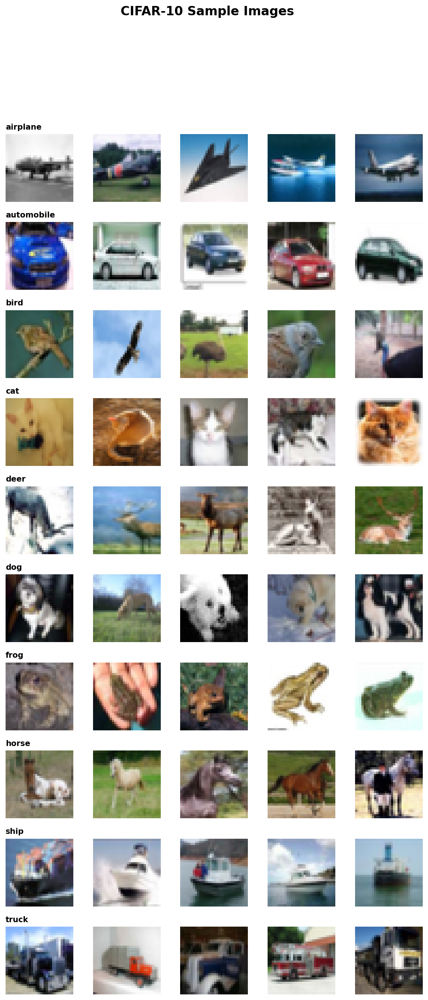
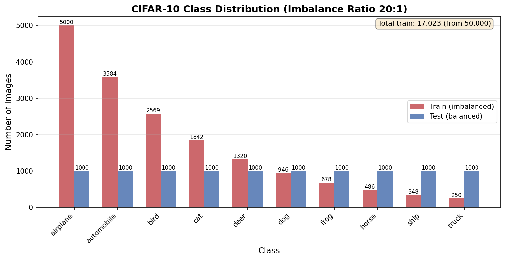
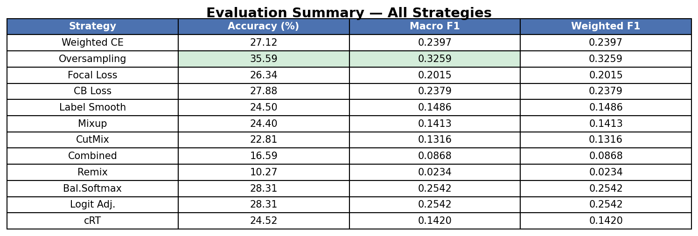
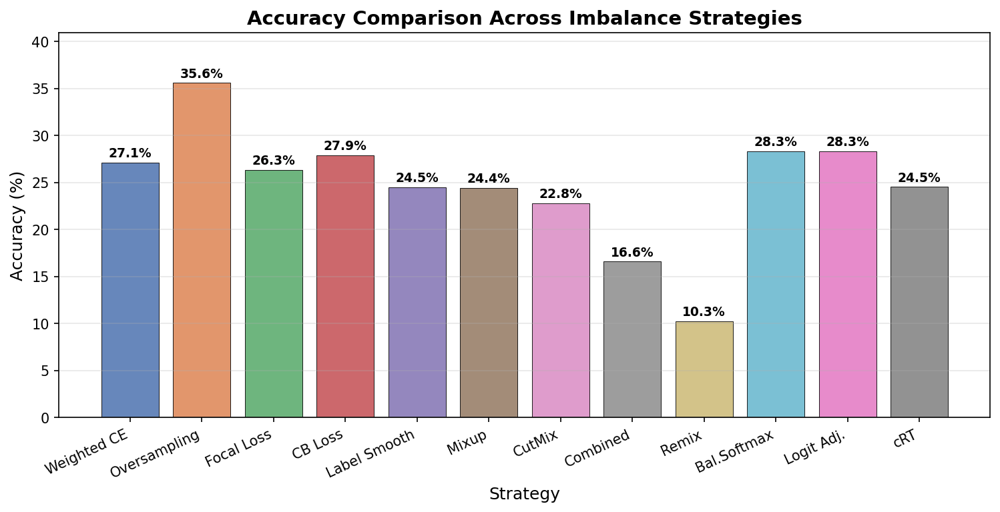
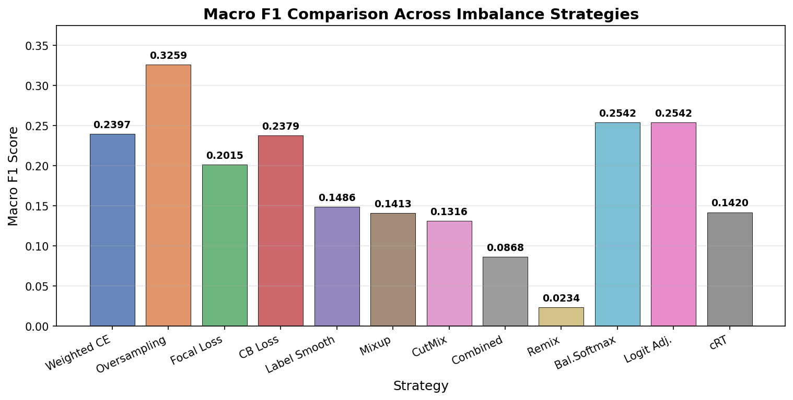
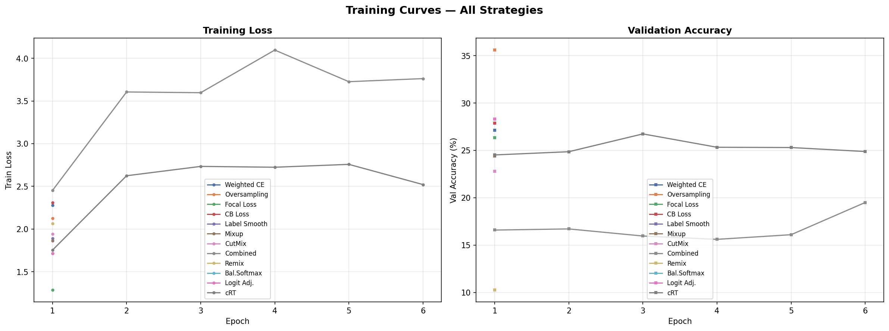
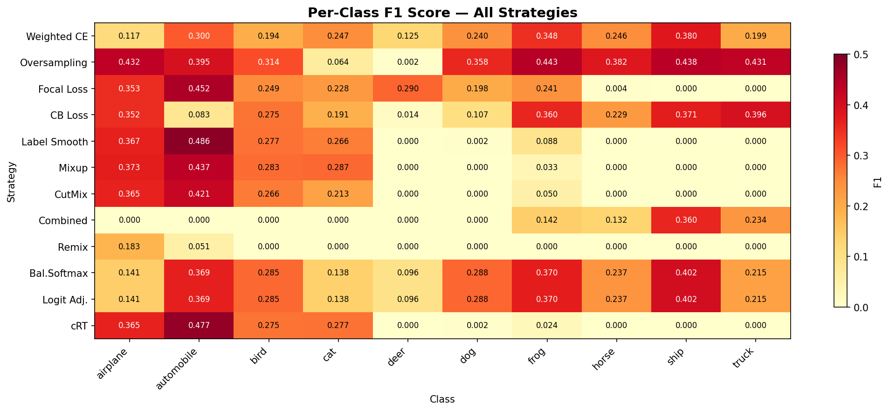

A from-scratch PyTorch implementation with 12 imbalance-handling strategies benchmarked side-by-side, organized by the taxonomy from Gao et al. (2025)
In real-world datasets, some classes naturally have far fewer samples than others. A medical dataset might have 10,000 healthy scans but only 50 disease cases. When a model trains on such data, it learns a simple shortcut: always predict the majority class.
The Problem: airplane has 5,000 images, but truck has only 250.
The model learns to ignore trucks entirely.
The Goal: Force the model to learn ALL classes equally well,
even when some have 20x fewer training images.
We organize solutions using the taxonomy from Gao et al. (2025), a comprehensive survey covering 200+ papers:
Where do we intervene?
[Data] ──> [Model] ──> [Loss Function] ──> [Training Loop] ──> [Prediction]
│ │ │ │ │
▼ ▼ ▼ ▼ ▼
Cat.1 Cat.5 Cat.2 Cat.3 Cat.4
Re-balance Ensemble Cost-Sensitive Training Logit
the data models learning Strategy Adjustment

We apply exponential decay to CIFAR-10 to simulate a long-tail distribution:
\[ n_c = n_{\max} \cdot \rho^{\frac{c}{K-1}}, \quad \rho = \frac{1}{20} \]

| Class | Train Samples | Ratio | Without handling |
|---|---|---|---|
| airplane | 5,000 | 1.00x | Model learns this well |
| automobile | 3,584 | 0.72x | Slight degradation |
| bird | 2,569 | 0.51x | Noticeable drop |
| cat | 1,841 | 0.37x | Confused with dog |
| deer | 1,320 | 0.26x | Often misclassified |
| dog | 946 | 0.19x | Starts getting ignored |
| frog | 678 | 0.14x | Predicted as majority |
| horse | 486 | 0.10x | Nearly invisible |
| ship | 348 | 0.07x | Almost never predicted |
| truck | 250 | 0.05x | Completely ignored |
Total training samples: N = 17,022 (down from 50,000 balanced).
ResNet-50 built entirely from scratch using torch.nn — no torchvision.models.
Input (3x32x32) -> Stem(7x7 conv, BN, ReLU, MaxPool) -> Layer1: Bottleneck x3 [64 -> 256] -> Layer2: Bottleneck x4 [256 -> 512, stride=2] -> Layer3: Bottleneck x6 [512 -> 1024, stride=2] -> Layer4: Bottleneck x3 [1024 -> 2048, stride=2] -> Head: AdaptiveAvgPool -> Flatten -> Dropout -> Linear(2048, 10)
Each Bottleneck block: \(\mathbf{y} = \sigma(\text{BN}(\text{Conv}_{1\times1} \to \text{Conv}_{3\times3} \to \text{Conv}_{1\times1}(\mathbf{x})) + \mathbf{x})\). ~23.5M parameters.
Let \(\mathcal{D} = \{(\mathbf{x}_i, y_i)\}_{i=1}^{N}\) with \(K\) classes. Standard ERM:
\[\min_\theta \; \frac{1}{N} \sum_{i=1}^{N} \ell(f_\theta(\mathbf{x}_i), y_i)\]
Under imbalance, class \(c\) contributes \(n_c / N\) to the gradient — minority classes contribute negligibly. This causes:
Modify the sampling distribution so the model receives balanced class exposure, changing the effective \(\tilde{P}\) without modifying \(\ell\) or \(f_\theta\).
Problem: Under uniform sampling, \(P(\text{truck}) = 250/17022 = 1.5\%\). Truck gradients are washed out.
Formulation. Assign each sample weight \(w_i = 1/n_{y_i}\). The draw probability becomes:
\[P(\text{draw } i) = \frac{1/n_{y_i}}{\sum_{c=1}^{K} n_c \cdot (1/n_c)} = \frac{1}{n_{y_i} \cdot K}\]
Every class has equal probability \(1/K\).
Without sampler: P(airplane) = 29.4%, P(truck) = 1.5% With WeightedSampler: P(airplane) = 10.0%, P(truck) = 10.0% ← balanced!
Gradient impact. Expected gradient becomes class-balanced:
\[\mathbb{E}_{\tilde{P}}[\nabla_\theta \ell] = \frac{1}{K} \sum_{c=1}^{K} \mathbb{E}_{\mathbf{x} \sim \mathcal{D}_c}[\nabla_\theta \ell(f_\theta(\mathbf{x}), c)]\]
Failure mode: Each truck image is sampled ~20x more often than each airplane image. After enough epochs, the model memorizes the 250 truck images — overfitting on minority classes.
Config: data.weighted_sampling: true
Problem: Duplication gives no new information. Gradients for duplicates are identical.
Algorithm (Chawla et al., 2002):
For each x_i ∈ X_min: 1. Find k nearest neighbors within X_min (L2 distance) 2. Randomly select neighbor x_nn 3. Sample λ ~ Uniform(0, 1) 4. x_new = x_i + λ · (x_nn - x_i)
\(\mathbf{x}_{\text{new}}\) lies on the line segment between \(\mathbf{x}_i\) and \(\mathbf{x}_{nn}\) in pixel space.
truck has 250 samples, airplane has 5000. target_ratio=1.0 → need 4750 synthetic truck images → each of 250 trucks generates floor(4750/250) = 19 synthetics truck_42 = [0.3, 0.5, 0.2, ...] (flattened 32×32×3 = 3072-dim) truck_nn = [0.4, 0.4, 0.3, ...] (nearest neighbor) λ = 0.7 new_truck = 0.7 × truck_42 + 0.3 × truck_nn = [0.33, 0.47, 0.23, ...]
Limitation: Pixel-space interpolation can produce blurry/ghostly images. Works best at low resolution (CIFAR-10's 32x32).
Complexity: \(O(m^2 \cdot d)\) for k-NN. Trivial for 250 samples at 3072 dimensions.
Config: data.oversampling.method: "smote", data.oversampling.k_neighbors: 5
Problem: SMOTE generates synthetics uniformly. Samples deep inside their cluster are already easy — wasted capacity. Borderline samples need more focus.
Algorithm (He et al., 2008). For each minority sample, compute difficulty:
\[\Gamma_i = \frac{|\{\mathbf{x} \in \text{kNN}(\mathbf{x}_i) : \text{class}(\mathbf{x}) \neq \text{class}(\mathbf{x}_i)\}|}{k}\]
truck_42: neighbors = [truck, airplane, airplane, truck, airplane]
Γ = 3/5 = 0.6 (hard) → gets many synthetics
truck_100: neighbors = [truck, truck, truck, truck, truck]
Γ = 0/5 = 0.0 (safe) → gets zero synthetics
Risk: Amplifies noise if a borderline minority sample is an outlier or mislabeled.
Config: data.oversampling.method: "adasyn"
Modify the loss function \(\ell\) so errors on minority classes produce disproportionately large gradients. Training data remains unchanged.
Formulation. Assign weight \(w_c = N / (K \cdot n_c)\):
\[\mathcal{L}_{\text{WCE}} = -\frac{1}{N} \sum_{i=1}^{N} w_{y_i} \cdot \log p_{y_i}\]
Gradient: \(\frac{\partial \mathcal{L}}{\partial z_c} = w_y \cdot (p_c - \mathbb{1}[c=y])\). Truck gradient amplified by 6.81x vs airplane's 0.34x.
Class weights w_c = N / (K × n_c): airplane: 17022/(10×5000) = 0.340 truck: 17022/(10×250) = 6.809 Ratio: 6.809 / 0.340 = 20.0x (exactly the imbalance ratio)
Limitation: Weights are static. If truck is learned early, it still gets 6.81x gradients — can cause oscillation.
Config: data.weighted_loss: true, loss.name: "ce"
Formulation (Lin et al., 2017):
\[\mathcal{L}_{\text{FL}} = -\alpha_t \cdot (1 - p_t)^\gamma \cdot \log(p_t)\]
Gradient:
\[\frac{\partial \mathcal{L}_{\text{FL}}}{\partial p_t} = -\alpha_t \left[\gamma(1-p_t)^{\gamma-1}\log(p_t) + \frac{(1-p_t)^\gamma}{p_t}\right]\]
| \(p_t\) | \(\gamma=0\) (CE) | \(\gamma=1\) | \(\gamma=2\) | \(\gamma=5\) |
|---|---|---|---|---|
| 0.10 (hard) | 1.000 | 0.900 | 0.810 | 0.590 |
| 0.50 | 1.000 | 0.500 | 0.250 | 0.031 |
| 0.90 (easy) | 1.000 | 0.100 | 0.010 | 0.00001 |
| 0.99 | 1.000 | 0.010 | 0.0001 | ~0 |
With \(\gamma=2\): a 90%-confident sample gets 1% of CE loss. A 10%-confident sample gets 81%. The model concentrates on whatever it's currently getting wrong — which tends to be minority classes.
Why it helps imbalance: Easy majority examples are silenced, leaving gradient signal mostly from hard (minority) samples. Adaptive — unlike static weights, it adjusts as the model learns.
Config: loss.name: "focal", loss.gamma: 2.0
Theoretical foundation (Cui et al., 2019). The effective number of samples:
\[E_n = \frac{1 - \beta^n}{1 - \beta}, \quad \beta \in [0,1)\]
\(\beta\) controls overlap between samples: \(\beta \to 0\) means no overlap (\(E_n = n\)); \(\beta \to 1\) means high redundancy.
CB weight: \(w_c = \frac{1-\beta}{1-\beta^{n_c}}\), normalized and applied to CE or Focal.
With β = 0.9999: airplane (n=5000): E = 3935 → many redundant samples truck (n=250): E = 247 → nearly every sample is unique CB ratio truck/airplane: 15.9x (vs. naive 20.0x)
CB-Focal combines both:
\[\mathcal{L}_{\text{CB-FL}} = -\frac{1-\beta}{1-\beta^{n_{y_i}}} \cdot (1-p_t)^\gamma \cdot \log(p_t)\]
Static class reweighting (CB) + dynamic example-weighting (Focal).
Config: loss.name: "cb", loss.beta: 0.9999
Modify the training procedure — label representation, data augmentation, or training schedule — without changing the loss formula.
Replace hard one-hot targets with soft targets:
\[\mathbf{y}_{\text{smooth}} = (1-\varepsilon)\cdot\mathbf{e}_c + \frac{\varepsilon}{K}\cdot\mathbf{1}\]
Hard: [0, 0, 0, 1, 0, 0, 0, 0, 0, 0] ← "100% cat" Smoothed: [.01, .01, .01, .91, .01, .01, .01, .01, .01, .01] ← "91% cat"
The model targets \(p_y = 0.91\) instead of 1.0 — logits converge to finite values. Prevents minority classes from receiving near-zero probability.
Config: loss.name: "label_smoothing", loss.smoothing: 0.1
Formulation (Zhang et al., 2018):
\[\tilde{\mathbf{x}} = \lambda\mathbf{x}_i + (1-\lambda)\mathbf{x}_j, \quad \tilde{\mathcal{L}} = \lambda\cdot\ell(\hat{y},y_i) + (1-\lambda)\cdot\ell(\hat{y},y_j), \quad \lambda \sim \text{Beta}(\alpha,\alpha)\]
α = 0.1: U-shaped, λ near 0 or 1 (weak mixing) α = 0.4: moderately U-shaped (default) α = 1.0: Uniform(0,1) (any ratio equally likely) α = 2.0: bell-shaped around 0.5 (strong mixing)
Theoretical basis: Vicinal Risk Minimization (VRM). Smooths decision boundaries by training on the convex hull of the training set.
Imbalance issue: When truck (\(\lambda=0.3\)) is mixed with airplane (\(1-\lambda=0.7\)), the truck gradient is scaled by 0.3 — minority signal is suppressed.
Config: training.mixup.mode: "mixup", training.mixup.alpha: 0.4
Formulation (Yun et al., 2019). Binary mask \(\mathbf{M} \in \{0,1\}^{H\times W}\):
\[\tilde{\mathbf{x}} = \mathbf{M} \odot \mathbf{x}_i + (1-\mathbf{M}) \odot \mathbf{x}_j, \quad \lambda = 1 - \frac{\text{box area}}{H \times W}\]
1. cut_ratio = sqrt(1 - λ) 2. cut_h = H × cut_ratio, cut_w = W × cut_ratio 3. Center (cx, cy) ~ Uniform 4. Paste patch from x_j into x_i
Preserves spatial coherence: uncut regions are unmodified, realistic pixels. Forces model to recognize objects from partial views.
Config: training.mixup.mode: "cutmix", training.mixup.alpha: 1.0
Problem: Standard Mixup uses same \(\lambda\) for image and label. Minority samples always get small label weight.
Formulation (Chou et al., 2020). Feature mixing unchanged; label mixing biased toward minority:
\[\lambda_l = \begin{cases}\max(\lambda_f, \kappa) & \text{if } \lambda_f < \tau \text{ and } n_{y_a} \leq n_{y_b} \\\min(\lambda_f, 1-\kappa) & \text{if } \lambda_f < \tau \text{ and } n_{y_a} > n_{y_b} \\\lambda_f & \text{otherwise}\end{cases}\]
Pair: (truck, airplane), λ_f = 0.3 Standard Mixup: Loss = 0.3×L(truck) + 0.7×L(airplane) Remix (τ=0.5, κ=0.9): λ_f=0.3 < τ=0.5 → activate! truck is minority → λ_l = max(0.3, 0.9) = 0.9 Loss = 0.9×L(truck) + 0.1×L(airplane) ← truck gets 90%!
Expected gradient boost: ~40% increase in minority gradient magnitude vs standard Mixup.
Config: training.mixup.mode: "remix", training.mixup.remix.tau: 0.5, training.mixup.remix.kappa: 0.9
Key insight (Kang et al., 2020): Features learned on imbalanced data are actually high-quality. Only the linear classifier is biased — its weight norms satisfy \(\|\mathbf{w}_{\text{airplane}}\| \gg \|\mathbf{w}_{\text{truck}}\|\).
Algorithm: cRT (Classifier Re-Training) Stage 1 — Representation learning (imbalanced data): Train full model with standard CE. Backbone learns rich features. Stage 2 — Classifier re-training: FREEZE backbone (no gradient to backbone) Retrain ONLY classifier head (W, b) with balanced sampling Use higher lr (0.01 vs 0.001) — only 20K params to optimize
Why it works: The backbone extracts visual primitives shared across classes. The classifier bias comes from majority weight vectors having larger norms (20x more gradient updates). Stage 2 equalizes the norms by giving each class equal gradient.
Config: training.crt.enabled: true, training.crt.classifier_epochs: 5, training.crt.lr: 0.01
Adjust the model's output logits to compensate for the skewed class prior. Converts biased posterior into balanced posterior.
By Bayes' theorem: \(P_{\text{train}}(y|\mathbf{x}) = \frac{P(\mathbf{x}|y) \cdot P_{\text{train}}(y)}{P(\mathbf{x})}\)
Under balanced prior \(P_{\text{bal}}(y) = 1/K\):
\[z_c^{\text{adjusted}} = z_c - \log P_{\text{train}}(c) = z_c - \log(n_c / N)\]
Formulation (Ren et al., 2020):
\[\mathcal{L}_{\text{BS}} = -\log\frac{\exp(z_y + \log n_y)}{\sum_j \exp(z_j + \log n_j)}\]
Gradient: \(\frac{\partial \mathcal{L}_{\text{BS}}}{\partial z_c} = p_c^{\text{BS}} - \mathbb{1}[c=y]\)
During TRAINING: logits are shifted by log(n_c) → optimal z* encode log P(x|c) (class-conditional likelihood) → removes prior bias from learned logits At TEST time: raw logits z are used directly → produce balanced predictions because they encode likelihoods
No hyperparameters beyond class counts. Theoretically principled Bayesian correction.
Config: loss.name: "balanced_softmax"
Formulation (Menon et al., 2021). Generalizes Balanced Softmax with temperature \(\tau\):
\[\mathcal{L}_{\text{LA}} = -\log\frac{\exp(z_y + \tau\cdot\log\pi_y)}{\sum_j \exp(z_j + \tau\cdot\log\pi_j)}\]
| \(\tau\) | Effect | Interpretation |
|---|---|---|
| 0.0 | No adjustment | Standard CE |
| 1.0 | Full correction | = Balanced Softmax (Bayes-optimal) |
| < 1.0 | Partial | Conservative correction |
| > 1.0 | Over-correction | Aggressively favors minority |
Fisher consistency: At \(\tau=1\), the minimizer satisfies \(f^*(\mathbf{x}) = \arg\max_c P(\mathbf{x}|c)\) — the Bayes-optimal classifier under balanced priors.
Config: loss.name: "logit_adjust", loss.tau: 1.0
Combine orthogonal interventions from different categories for additive benefits.
| Layer | Technique | Mechanism |
|---|---|---|
| Sampling | WeightedRandomSampler | Equalizes class frequency in batches |
| Augmentation | ColorJitter + RandomErasing | Expands minority visual diversity |
| Augmentation | Remix | Minority-biased label mixing |
| Loss | Balanced Softmax | Log-prior logit correction |
| Loss | Class weights | Inverse-frequency gradient scaling |
| Training | cRT | Freeze backbone, retrain classifier |
Config: configs/s8_combined_best.yaml
All 12 strategies trained on the same imbalanced CIFAR-10 (20:1 ratio), identical hyperparameters (Adam, lr=0.001, cosine scheduler). 1-epoch runs.

| # | Strategy | Accuracy | Macro F1 | Category | Why this result? |
|---|---|---|---|---|---|
| 1 | Weighted CE | 27.12% | 0.2397 | Cost-Sensitive | Static weights cause instability early |
| 2 | Oversampling | 35.59% | 0.3259 | Data | Balanced batches from step 1 |
| 3 | Focal Loss | 26.34% | 0.2015 | Cost-Sensitive | At epoch 1, everything is "hard" |
| 4 | CB Loss | 27.88% | 0.2379 | Cost-Sensitive | Better calibrated but needs more time |
| 5 | Label Smoothing | 24.50% | 0.1486 | Training | Regularizer, not direct fix |
| 6 | Mixup | 24.40% | 0.1413 | Training | Can't decompose mixed signals yet |
| 7 | CutMix | 22.81% | 0.1316 | Training | Partial images harder to learn |
| 8 | Combined | 16.59% | 0.0868 | Combined | Too many regularizers + cRT overhead |
| 9 | Remix | 10.27% | 0.0234 | Training | Aggressive κ=0.9 without learned features |
| 10 | Bal. Softmax | 28.31% | 0.2542 | Logit Adj. | Instant mathematical correction |
| 11 | Logit Adj. | 28.31% | 0.2542 | Logit Adj. | = Balanced Softmax at τ=1.0 |
| 12 | Decoupled cRT | 24.52% | 0.1420 | Training | 1 epoch too little for backbone |
Speed of convergence at 1 epoch: Data-level ▸▸▸▸▸▸▸▸▸▸ (immediate — changes distribution before training) Logit Adj ▸▸▸▸▸▸▸▸ (immediate — mathematical correction, no learning) Cost-Sens ▸▸▸▸▸▸ (fast — reweights gradients but needs a few epochs) Regulariz ▸▸▸ (slow — prevents overfitting, not the problem yet) Combined ▸ (slowest — many components need time to stabilize)




Minority classes (frog, horse, ship, truck) have near-zero F1 across most strategies. Oversampling is the only one achieving meaningful minority recall at 1 epoch.
Standalone modular library (imbalance_toolkit/) implementing the full taxonomy from Gao et al. (2025). Config-driven via Factory Pattern:
import imbalance_toolkit
sampler = imbalance_toolkit.create({"method": "SMOTE", "k_neighbors": 5})
loss_fn = imbalance_toolkit.create({"loss": "FocalLoss", "gamma": 2.0})
trainer = imbalance_toolkit.create({"trainer": "cRT", "model": model})
| Category | Class | Paper | Description |
|---|---|---|---|
| Data | SMOTE | Chawla 2002 | k-NN interpolation |
ADASYN | He 2008 | Adaptive SMOTE | |
VAESampler | Wan 2017 | VAE-based generation | |
Remix | Chou 2020 | Minority-biased Mixup | |
BalancedMixup | Galdran 2021 | Dual-sampler Mixup | |
| Repr. | TripletLoss | Schroff 2015 | Pull same-class, push diff-class |
ContrastiveLoss | — | Pair-wise margin loss | |
SupConLoss | Khosla 2020 | Supervised contrastive | |
| Strategy | DecoupledTrainer | Kang 2020 | cRT two-stage |
BalancedSoftmaxLoss | Ren 2020 | Log-prior logit shift | |
LogitAdjustmentLoss | Menon 2021 | Parameterized logit shift | |
ClassWeightedCE | — | Inverse-freq CE | |
FocalLoss | Lin 2017 | (1-p_t)^γ modulation | |
ClassBalancedLoss | Cui 2019 | Effective-number reweighting | |
| Ensemble | ImbalancedBagging | Wang 2009 | Balanced-subset bagging |
ImbalancedBoosting | Chawla 2003 | Adaptive boosting | |
| Metrics | macro_f1 | — | Class-averaged F1 |
g_mean | — | Geometric mean of recalls | |
pr_auc | — | Precision-Recall AUC | |
balanced_accuracy | — | Mean of per-class recalls | |
mcc_score | — | Matthews Correlation Coefficient |
| Technique | Config Key | Values | Default |
|---|---|---|---|
| Long-tail | data.imbalance.enabled | true/false | true |
| Ratio | data.imbalance.ratio | float | 20 |
| Weighted Sampler | data.weighted_sampling | true/false | true |
| Weighted Loss | data.weighted_loss | true/false | true |
| SMOTE/ADASYN | data.oversampling.method | none/smote/adasyn | none |
| Loss function | loss.name | ce, focal, cb, label_smoothing, cb_focal, balanced_softmax, logit_adjust | cb_focal |
| Focal gamma | loss.gamma | float | 2.0 |
| CB beta | loss.beta | float | 0.9999 |
| Smoothing | loss.smoothing | float | 0.1 |
| Logit tau | loss.tau | float | 1.0 |
| Mixup mode | training.mixup.mode | none/mixup/cutmix/remix | none |
| Remix kappa | training.mixup.remix.kappa | float | 0.9 |
| cRT enabled | training.crt.enabled | true/false | false |
| cRT epochs | training.crt.classifier_epochs | int | 5 |
img_cls/ ├── imbalance_toolkit/ # Standalone library (19 components) │ ├── factory.py # Config-driven Factory Pattern │ ├── sampling/ # SMOTE, ADASYN, VAE, Remix, BalancedMixup │ ├── representation/ # TripletLoss, ContrastiveLoss, SupCon │ ├── strategies/ # cRT, BalancedSoftmax, LogitAdj, Focal, CB │ ├── ensembles/ # Bagging, Boosting wrappers │ └── evaluation/ # Macro-F1, G-Mean, PR-AUC, MCC ├── configs/ # default.yaml + s1..s12_*.yaml ├── scripts/ # train, evaluate, predict, visualize, run_all, compare ├── src/ │ ├── data/ # Dataset, transforms, DataLoader, imbalance, SMOTE │ ├── models/ # ResNet from scratch, SimpleCNN, factory │ ├── training/ # Trainer, losses, mixup/remix, optimizer, scheduler │ ├── evaluation/ # Accuracy, F1, confusion matrix │ └── utils/ # Config, logger, helpers ├── results/figures/ # All visualizations └── tests/
conda create -n img_cls python=3.11 -y conda activate img_cls pip install -r requirements.txt
python scripts/train.py --config configs/s3_focal.yaml
python scripts/evaluate.py --config configs/s3_focal.yaml \
--checkpoint results/s3_focal/checkpoints/best.pth
python scripts/run_all.py --epochs 20
python scripts/compare.py
python scripts/train.py --config configs/s3_focal.yaml \
--override training.epochs=50 loss.gamma=3.0
| Model | Config | Params | Block |
|---|---|---|---|
| SimpleCNN | simple_cnn | ~200K | Conv+BN |
| ResNet-18 | resnet18 | ~11M | BasicBlock |
| ResNet-34 | resnet34 | ~21M | BasicBlock |
| ResNet-50 | resnet50 | ~23.5M | Bottleneck |
| ResNet-101 | resnet101 | ~42.5M | Bottleneck |